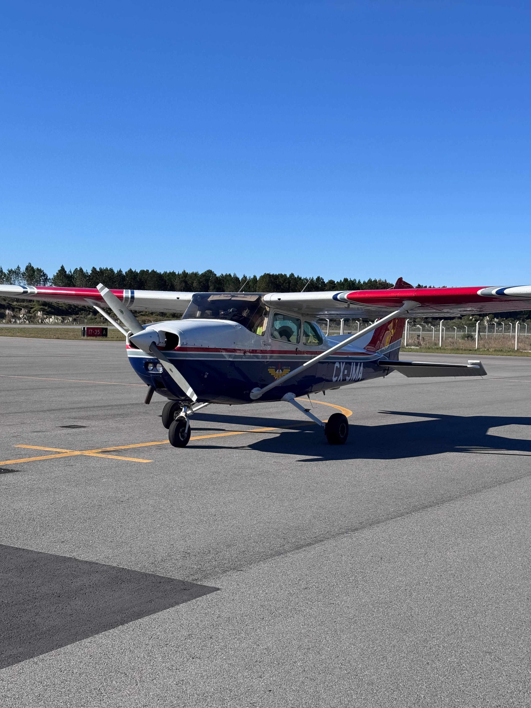

Promover y desarrollar la actividad aeronáutica en el departamento de Colonia, fomentando la formación de pilotos, la cultura aeronáutica, la seguridad operacional y el espíritu de camaradería, brindando servicios y actividades que acerquen la aviación a la comunidad y contribuyan al desarrollo educativo, turístico y social de la región.
Ser una institución aeronáutica de referencia en Uruguay, reconocida por su compromiso con la formación, la preservación de la historia aeronáutica, la innovación, la integración con la comunidad y el crecimiento sostenido de la aviación civil en Colonia y el país.
El Colonia Aeroclub aspira a consolidarse como un centro aeronáutico moderno, abierto a la comunidad y orientado al desarrollo regional, impulsando:
La formación de nuevas generaciones de pilotos y técnicos aeronáuticos.
La realización de festivales aéreos, jornadas educativas y actividades culturales vinculadas a la aviación.
La preservación de la historia aeronáutica coloniense y nacional.
La cooperación con instituciones educativas, organismos públicos y organizaciones aeronáuticas.
El fortalecimiento del turismo aeronáutico y de experiencias vinculadas al Aeropuerto Internacional de Colonia “Laguna de los Patos”.
La incorporación gradual de nuevas tecnologías, simulación de vuelo y herramientas digitales.
La promoción de valores como la disciplina, la seguridad, la responsabilidad y el trabajo en equipo.
El futuro del Colonia Aeroclub se proyecta como el de una institución activa, sostenible y comprometida con mantener viva la pasión por volar, inspirando a nuevas generaciones y posicionando a Colonia como un punto relevante dentro de la aviación uruguaya.
